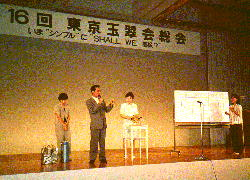
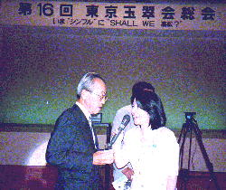
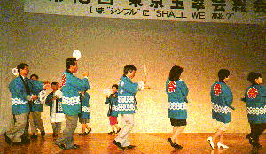
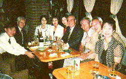

第１６回東京玉翠会総会の報告
第１６回東京玉翠会総会は、1998年(H10)７月11日午後５時から東京プリンスホテルで行われました。
今年の総会のテーマは、
「いま”シンプル”にＳＨＡＬＬ ＷＥ高松？」
友と共に昔に戻り、故郷と思い出を語り合い、新たな交友を育む同窓会。
今再び、この同窓会の原点に立ち返り、シンプルな総会を目指したい。
このようなわれわれの思いをテーマにしました。（総会プログラムより）
|

恒例のお楽しみ抽選会
|

卒業生が集う場所「玉翠倶楽部」が発足し、インタビューに答える大西事務局長(33年卒)。
インタビューアーは松井さん(48年卒) |
|

総会は、一合まいたを踊りながら
フィナーレを迎えた。
|

２次会では、世代を超えて交流がもたれた学年もある。
(27年卒、37年卒卒、47年卒、H７年卒の人々) |
高松高校東京玉翠会トップページ
|